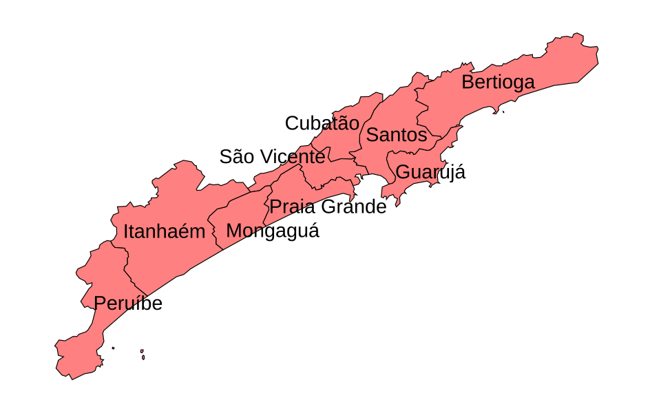
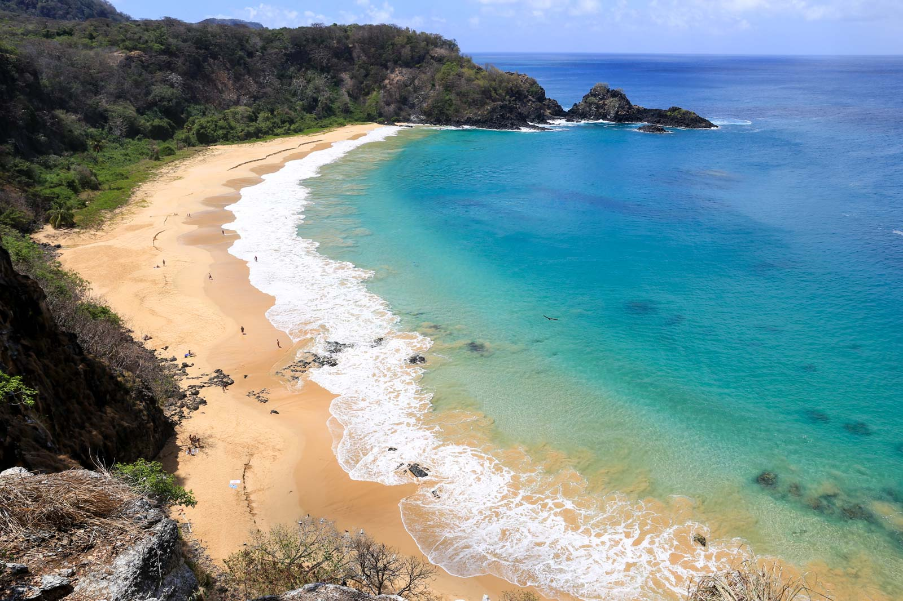
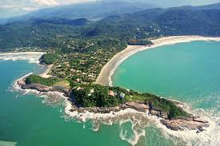
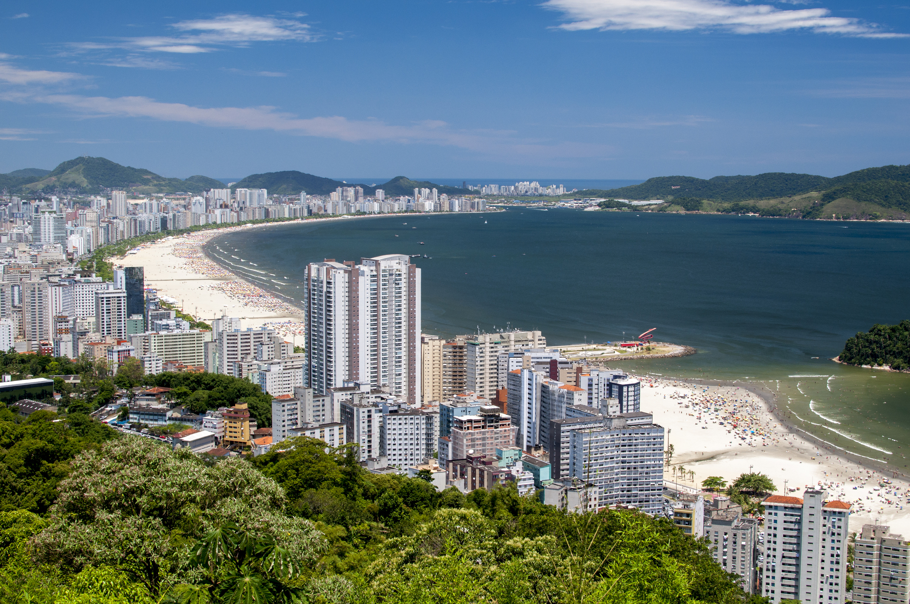
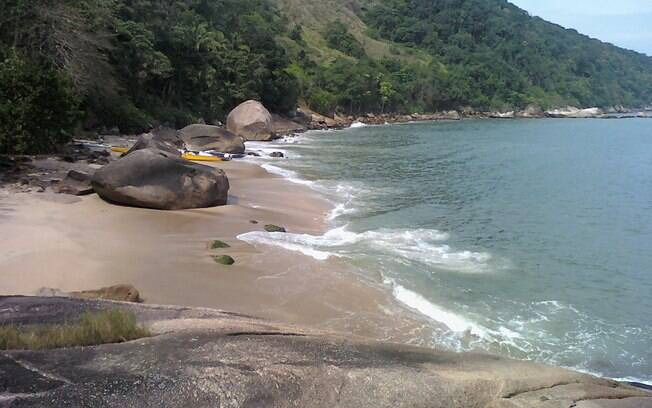

CURIOSIDADES SOBRE A BAIXADA:
A Baixada Santista, primeira região metropolitana brasileira sem capital estadual, abriga o maior jardim de orla do mundo em Santos (mais de 5 km) e o maior porto do Brasil. São Vicente é a cidade mais antiga do país (1532), e o surfe no Brasil começou em Santos em 1938.
PRAIAS DA BAIXADA:




A Baixada Santista, no litoral de SP, oferece diversas praias, desde urbanizadas com ótima infraestrutura até selvagens. Guarujá (Tombo, Pernambuco), Santos (Gonzaga, Embaré), Praia Grande (Canto do Forte) e Peruíbe (Guaraú) são destaques, com águas muitas vezes tranquilas, ideais para famílias, surfistas e turismo de fim de semana.
| Cidade | Habitantes (2025) | Área (km²) |
|---|---|---|
| Santos | 429.547 | 281,033 km² |
| Praia Grande | 368.539 | 147,1 km² |
| Cubatão | 112.471 | 142,9 km² |
| São Vicente | 329.911 | 148,15 km² |
| Peruíbe | 68.352 | 326,2 km² |
| Mongaguá | 61.951 | 147,1 km² |
| Itanhaém | 112.476 | 141,9 km² |
| Guarujá | 287.634 | 144,79 km² |
| Bertioga | 64.188 | 491,5 km² |
Feito por: Nicollas Xavier, Vinicíus Carano, Giovanni Habib